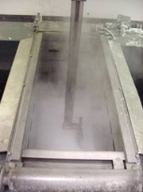
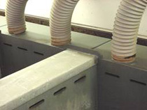

Level 1 - Texturing
| Texturing is in general carried out using anisotropic etches in chemical baths similar to the one shown on the right. |
|
 |
Anisotropic etches are ones that etch the different planes of silicon at different rates. Examples include dilute sodium hydroxide or dilute potassium hydroxide, both of which will etch the high density <111> planes of silicon significantly more slowly than the other planes. When such an etch is used in conjunction with crystalline silicon, the slower etching <111> planes will be exposed at the surface in a configuration dependent on the orientation of the silicon crystal. For wafers that are of (100) orientation, the exposed <111> planes will intersect so as to form upright tetrahedral pyramids on the wafer surface as shown to the right. The formation of these pyramids across the entire surface of the silicon wafer is known as texturing, a process used on most commercially manufactured solar cells for the purpose of reducing surface reflection. |
One of the main challenges in producing good quality texturing lies with the tendency for the dilute sodium hydroxide solution to etch the peaks of the pyramids. This will gradually destroy existing pyramids with the final quality of the textured surface dependent upon the relative rates of new pyramid nucleation versus existing pyramid destruction.
| The most common approach used to minimize the destruction of existing pyramids is to add isopropanol to the texturing solution. The common belief is that carbon precipitates in the texturing solution originating from the isopropanol adhere to the silicon surface thereby preventing etching at that point. This nucleates the growth of a pyramid whereby its apex is protected from being etched by the presence of the carbon precipitate. Provided a high density of these precipitates can be retained on the silicon surface for approximately 15-20 minutes, good quality texturing can be achieved. Good quality refers to the uniformity of the pyramid distribution, the achievement of pyramid dimensions in the range of 3-8 microns (across the pyramid base), 100% coverage of the wafer surface with pyramids, and pyramid bases that are not rounded but rather are formed through the sharp intersection between adjacent <111> planes. |  |
The most commonly used formula for texturing is to use 2% W/V sodium hydroxide at 90-95°C with approximately 5% (by volume) propanol added immediately prior to immersing the wafers in the texturing solution. Repeated use of the same texturing solution is essential in manufacturing environments, with residual quantities of isopropanol remaining from the previous batch of texturing. Critical parameters that have an impact on the quality of the texturing include:
- The isopropanol concentration;
- The sodium hydroxide concentration;
- The temperature of the solution;
- The evaporation rate of isoproponal from the solution surface which is dependent on exhausting arrangements and the type of cover used;
- The time delay between batches;
- The wafer’s surface finish prior to texturing;
- The duration of the texturing process;
- The accumulation of sodium silicate within the texturing batch;
- The number of wafers/cassettes included in each batch.
|  | Typically, the 2% sodium hydroxide solution will be heated to approximately 90°C. The isopropanol will then be gradually added over a period of about 30 seconds. The wafers will then be gently immersed in the solution for a period of 15-20 minutes. The length of time required for the texturing process depends very much on the size of pyramids being formed and their density. The density of the pyramids appears to depend heavily on the type of surface finish the wafer has following the saw damage removal etch as well as the isopropanol concentration in the texturing solution. With a high density of pyramid formation, each pyramid only needs to grow to a few microns in size before adjacent pyramids impinge on each other. To grow pyramids of this size, less than 10 minutes of texturing are required. |

Sodium silicate is in general quite difficult to remove by other means. It does, however, directly react with hydrofluoric acid, making the removal process relatively straightforward. Hydrofluoric acid, however, is arguably the most dangerous of all the acids and must be handled with extreme care. No one should ever work with hydrofluoric acid without thorough training and knowledge of its characteristics.
| Following a period of about 5 minutes in hydrofluoric acid, the wafers are again rinsed in deionized water before being placed in dilute (approximately 10%) hydrochloric acid. Hydrochloric acid reacts with metal atoms on the wafer surface that can potentially cause significant harm to solar cell performance if able to diffuse into the bulk of the silicon material during high temperature processes. It is therefore essential that the concentration of such unwanted metal atoms is minimized immediately prior to each high temperature process. Following about 5 minutes’ immersion in the hydrochloric acid, the wafers are again rinsed in deionized water, again often through a cascaded arrangement of baths. |
This final rinse may well last for up to 10 minutes to ensure the highest level of cleanliness. The cassettes of wafers are then normally transferred to a spin dryer (as shown to the left) in which the wafers are again sprayed with deionized water before being spun dry and often blown with hot nitrogen gas. Following drying in this extremely clean environment, the wafers progress to the first high temperature process, the phosphorus diffusion of the top surface.
Texturing is sometimes regarded as “black magic“. Part of this stigma arises from the perception that identically repeated processes can sometimes give drastically different results. This perception probably arises because of the large number of parameters (many of which are not well understood) that can in fact have a significant impact on the texturing process. A couple of examples experienced on production lines are as follows.
Example 1
| In one manufacturer’s production facility, the commissioning of a new belt furnace (typical of that shown) coincided with a severe deterioration in the texturing quality. The observed change in the texturing was that considerable non-uniformity in pyramid sizes resulted, with large numbers of very small pyramids in the vicinity of 1-2 microns ranging right up to large numbers of more normally sized pyramids in the range of 5-10 microns. The cause of the change was eventually identified as resulting from the commissioning of the new exhaust system for the new belt furnace which incidentally reduced the exhaust flow/ventilation for the texturing bath. Restoration of the original ventilation air flows for the texturing bath restored the texturing to its original high quality and uniformity of pyramid size, thereby demonstrating the importance of this particular parameter. |  |
The cause of the change is believed to relate to the evaporation rate of the isopropanol from the texturing solution. In the early stages of texturing, the isopropanol is believed to be necessary to produce the precipitates on the wafer surface that nucleate the pyramid growth. Provided a reasonable density of pyramid nucleation takes place, it is therefore not necessary for large numbers of new pyramids to continually nucleate during the texturing process. The high evaporation rate for the isopropanol from the texturing solution helps reduce this generation rate for the later stages of the texturing process. In the example given, the reduced air flow for ventilating the texturing bath that occurred when the new belt furnace was commissioned appeared to cause a reduction in the evaporation rate for the isopropanol therefore leading to larger volumes of isopropanol remaining in the solution in the later stages of texturing. This higher concentration appears to therefore explain why relatively large numbers of small pyramids continued to generate late in the texturing process, therefore leading to the large non-uniformity in pyramid dimensions.
This experience clearly demonstrates the important role of isopropanol. Too much isopropanol in the texturing solution causes too high a density of nucleation for pyramids with a corresponding smaller than preferred dimension for the pyramids. Insufficient propanol at the commencement of texturing leads to too low a density of pyramid nucleation, with pyramids therefore needing to grow to much larger dimensions over a longer period of time to give complete coverage of the wafer surface. For sequential batches of texturing, there will always be some residual isopropanol from the preceding batch, with the replenishment volume being typically reduced to approximately 4% for the second and subsequent batches.
|  | The above experience led to a study of the impact of variations in the ventilation rate (a typical exhaust system is shown to the left). Insufficient evaporation rate for the isopropanol led to the effect described above relating the non-uniform pyramid sizes and distribution. Excessive evaporation rates led to too rapid a depletion of the isopropanol concentration, leading to low density nucleation of pyramids. This can be compensated for by increased isopropanol concentration prior to immersing the cassettes of wafers although this has other side effects of making the solution too turbulent with the consequence that precipitates can then be dislodged from the pyramid apexes during texturing, therefore leading to their destruction. Once an appropriate ventilation rate has been established, the main challenge is to retain repeatability in the procedures which include adding the right volume of isopropanol, always placing the cassettes of wafers in the solution the same length of time after adding the isopropanol, maintaining the right texturing bath temperature (that also has significant impact on the isopropanol evaporation rate), keeping the ventilation rate for texturing bath constant throughout the texturing and from batch to batch, and finally ensuring the lid of the texturing bath is replaced in an identical fashion for each batch. |
Example 2
Another experience from a production line was when the damage removal etch solution was disposed of and replaced by a fresh 30% sodium hydroxide solution without any sodium silicate. With apparently nothing else changing, the pyramid density during texturing dropped quite markedly with the corresponding pyramid size rising to typically 15 microns. Even with these larger pyramids, the nucleation density was too low such that after the standard texturing period, approximately 30% of the wafer surface remained flat and untextured. The role of the sodium silicate in the damage removal etch is discussed in the section relating to the saw damage removal etch. Ideally, this etch produces a roughened surface that appears conducive to enhancing the rate at which precipitates stick to the wafer surface to nucleate subsequent pyramid growth. The other important factor seems to be that the rougher surface also makes it more difficult for the precipitates to be dislodged during the subsequent texturing, therefore minimizing the number of pyramids destroyed during the actual texturing process. Again, other texturing parameters can be varied to compensate for the undesirable wafer surface following the saw damage removal etch. For instance, the duration of texturing can be increased to facilitate increased coverage of the wafer surface by pyramids. An adverse effect of this compensation, however, is that pyramids needs to grow as large as up to 20 microns in size, which in turn necessitates the precipitates at the apex surviving for much longer periods of time. Many pyramids may not survive the increased duration and will consequently be destroyed. Also, the larger pyramid size can cause problems with subsequent screen printing, antireflection coating deposition and even increase dislocation generation from the pyramid peaks and bases, with propagation into the base. Other parameters that can be varied to minimize the impact of the changed saw damage removal etch include increasing the isopropanol concentration to increase the pyramid nucleation density, or even slightly reducing the ventilation rate for the solution so as to facilitate increased pyramid nucleation during the texturing process to compensate for the lower initial nucleation density.
Adjustment of these parameters to compensate for the poorer initial nucleation density all give non-optimal outcomes compared to fixing the problem with the saw damage removal etch.
Example 3
A third example of an obscure change to the texturing solution was when one manufacturer simply changed to a different supplier of the isopropanol. The specification sheets for the “transistor grade“ isopropanol were identical and yet the two sources behaved quite differently in the texturing bath. The difference is still not well understood although this phenomenon has necessitated improved in-line quality control whereby all new batches of isopropanol are tested in parallel with preceding batches of isopropanol that are of known quality and known to work as required in the corresponding processes. Good isopropanol stocks are consequently always held in reserve for occasions when problems exist with new suppliers.
Example 4
A fourth example relates to when a new operator poured the chemicals into the texturing bath in a somewhat different fashion to normal. One problem related to pouring the isopropanol at a different rate, therefore causing changes both to the evaporation rate and the solution turbulance. The second problem related to pouring the liquid sodium hydroxide into the deionized water without stirring when establishing the texturing solution. This allowed the higher density concentrated sodium hydroxide to settle in the bottom of the bath, therefore causing a concentration gradient as well as a temperature gradient in a similar manner as to occurs with solar ponds as is described in the section on the saw damage removal etch.
With regard to adding the propanol to the texturing bath, caution is advised as the texturing bath temperature is higher than the boiling point of the isopropanol. The isopropanol should therefore be poured slowly into the texturing bath over a period of approximately 30 seconds. The isopropanol is also less dense than the dilute sodium hydroxide leading to a significant proportion of the isopropanol residing near the surface of the texturing solution. For this reason, the texturing baths should be designed so as to facilitate a depth of solution significantly greater than the width of the wafers to ensure that the highest point of the silicon wafer is submerged at least 3 cm below the texturing bath surface. Failure to observe this design constraint will lead to a region of the silicon wafer being exposed to much higher turbulence and much higher isopropanol concentrations with corresponding negative impacts on the quality of the resulting texturing.
ADVANCED TEXTURING TECHNIQUES |
Advanced texturing techniques have been developed over the last decade that reduce the importance and dependence on many of the key parameters such as isopropanol concentration, ventilation rate, surface finish following the saw damage removal etch, and critical periods of timing such as delays between batches or the delay between isopropanol addition and the immersion of the cassettes of silicon wafers. The important ingredient is again sodium silicate that forms naturally during the texturing process as the sodium hydroxide reacts with the silicon. However, approximately 20 batches of silicon wafers need to be textured before sufficient sodium silicate is produced to have a positive impact upon the texturing process. |
It is still not well understood what role the sodium silicate plays, but one possibility is that the increased solution viscosity reduces solution turbulence, therefore facilitating better pyramid nucleation and improved precipitate survival during texturing while necessitating less isopropanol. Although the role of the sodium silicate is not well understood, it has been observed that reasonable quantities of boron have also been found to aid the texturing process.
Another theory is that the sodium silicate itself provides another source of precipitates that settle on the silicon wafer surface to nucleate pyramid growth. Even if this is the case, a small quantity of isopropanol is nevertheless required in the texturing solution but with replenishment rates between batches of only typically 1% rather than the more normally expected 4-5%.
The isopropanol also appears to perform an invaluable “wetting“ function for the wafer surface that facilitates a uniform and reliable evolution of hydrogen gas bubbles from the surface so as to allow the texturing to proceed uniformly and reliably. Insufficient propanol even in this regime of texturing will lead to the gas bubbles apparently sticking to the surface until growing to quite large dimensions in the vicinity of many millimetres in diameter. These growing gas bubbles at the surface prevent access of the texturing solution to the silicon surface, therefore damaging the corresponding regions of texturing.
The much lower dependence on propanol in this texturing regime therefore removes the sensitivity of the texturing quality to the ventilation rate. Much lower ventilation rates can be tolerated with much smaller volumes of propanol requiring evaporation during the texturing process. These texturing solutions also perform far more reliably and consistently with a wide range of surface finishes following the saw damage etch. These solutions even work well with wafers with highly polished mirror surfaces produced through mechanical polishing. The main challenge is to initially get these solutions working as required as there is no simple recipe to follow when initially forming the solution. A good approach for high volume production has been to form a new solution by disposing of half of the old solution that is to be discarded because of excessive accumulation of sodium silicate. Half of the old solution is then combined with an equivalent volume of 2% sodium hydroxide with approximately 4% isopropanol concentration (2% when measured relative to the full volume of the new solution). While “tuning in“ the new texturing bath, a couple of dummy wafers are sufficient for evaluation purposes. The only real variable that needs to be adjusted is the isopropanol concentration. If the solution contains insufficient isopropanol, the pyramids will be larger in size and there will be a tendency for the pyramid bases to be over-etched to form actual grooves. At the other extreme, excessive volumes of isopropanol will cause greater non-uniformity in pyramid sizes, often with large clumps of very small pyramids. There may also be evidence of pyramids being destroyed through the nulceation of new pyramids onto the side faces of existing pyramids.
 |
Between batches, some replenishment of sodium hydroxide will also be necessary if large numbers of batches (such as shown to the left) are to be textured. The volume required for replenishment can be relatively easily calculated by measuring the amount of silicon removed during the texturing for each wafer, and multiplying this by the number of wafers being textured. From this total volume of silicon removed, the quantity of sodium hydroxide consumed can be relatively easily calculated. The only trap in this calculation is that the wafer thickness for the textured wafer will be measured between pyramid peaks with allowance having to be made for the silicon also removed between the pyramid peaks and the pyramid bases. |
Another indicator as to whether the right amount of isopropanol is being replenished between each batch is to observe the density of dots formed on the wafer surface by hydrogen gas bubbles sticking to the surface during texturing. These dots will normally cover approximately a couple of percent of the wafer surface with higher coverage indicating the need for additional propanol, while reduced coverage by these dots indicates that reduced volumes of propanol replenishment can be tolerated.
Another key advantage of this type of texturing regime is that it is far less dependent on the number of wafers being textured and their type. In these solutions, even highly polished mirror surfaces through mechanical polishing can be tolerated as can wafers of any size, type and number. A further caution with this type of texturing is the tendency for residues of sodium silicate to remain on the wafer surface following the completion of texturing. It is essential that a well ventilated hydrofluoric (HF) acid bath (such as shown to the right) be used following a deionized rinse to ensure that this sodium silicate is thoroughly removed. Extreme care must be exercised when working with HF acid. |